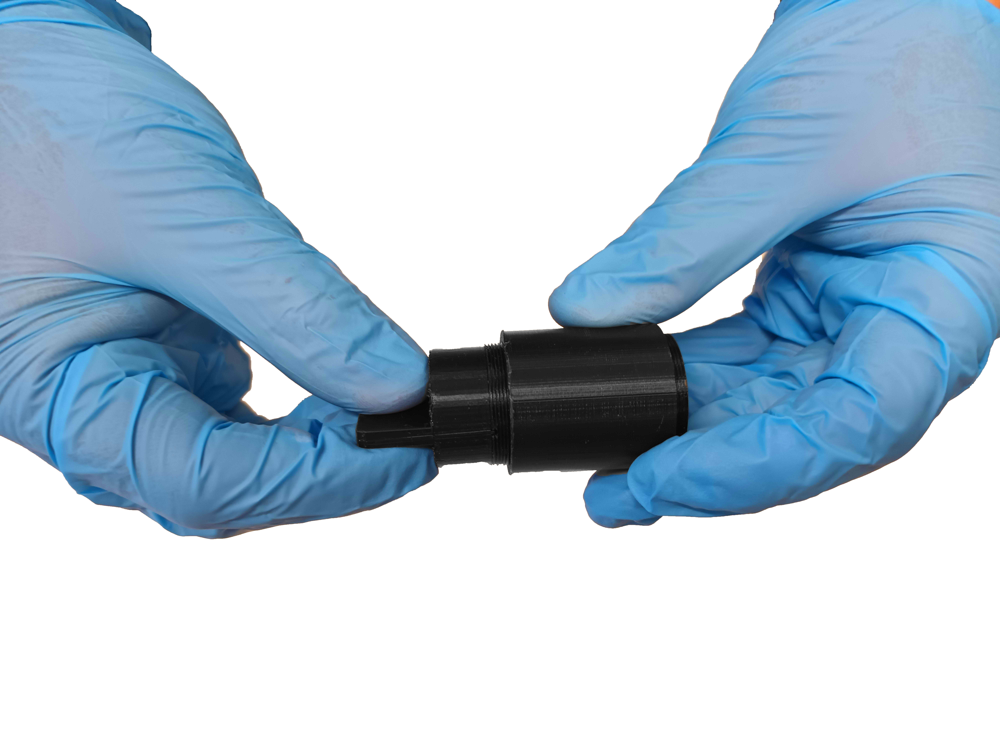
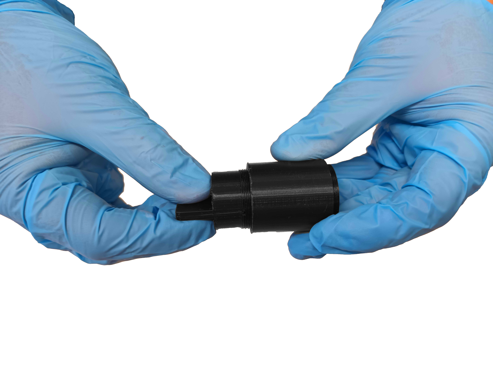
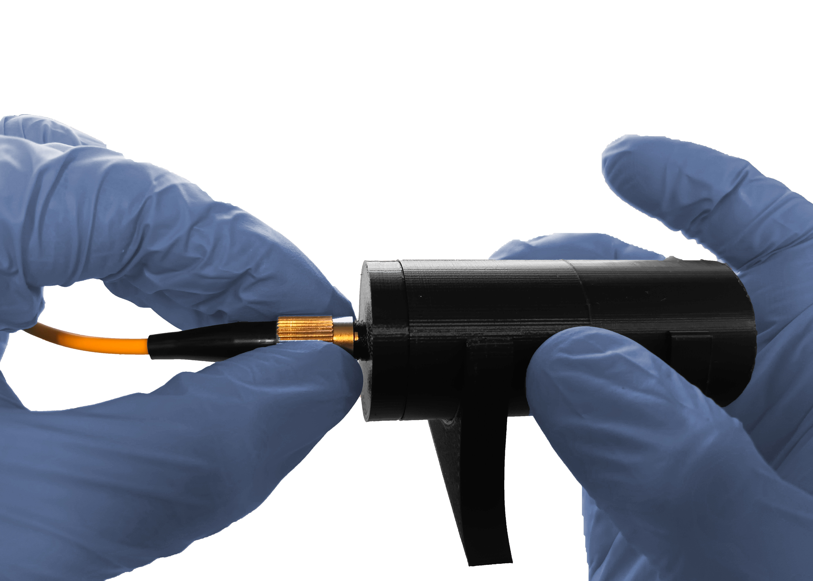
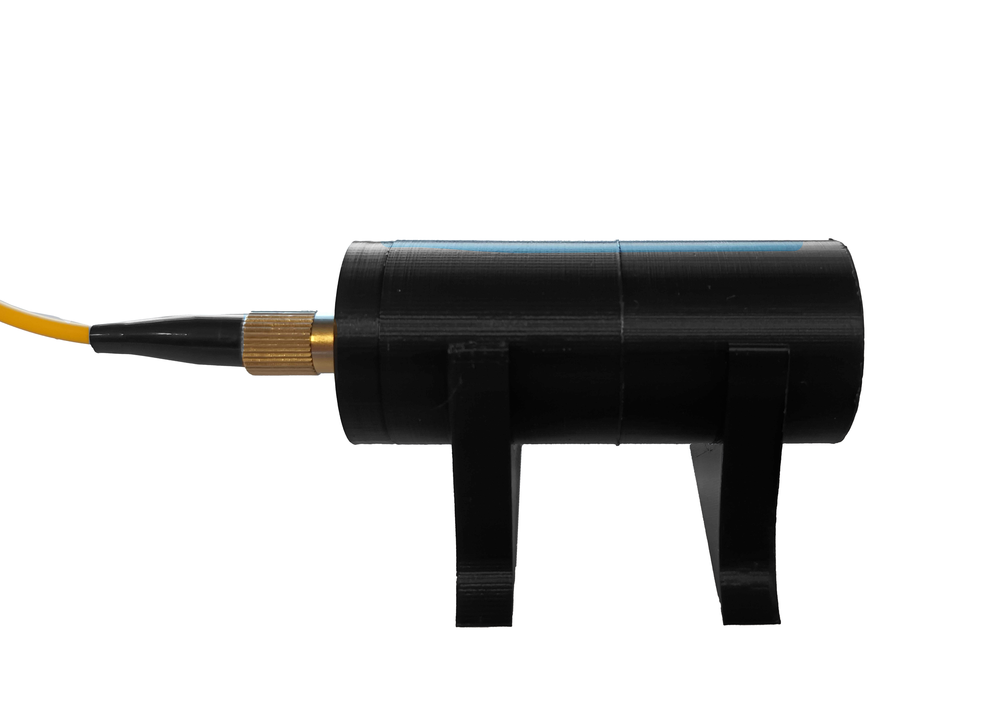
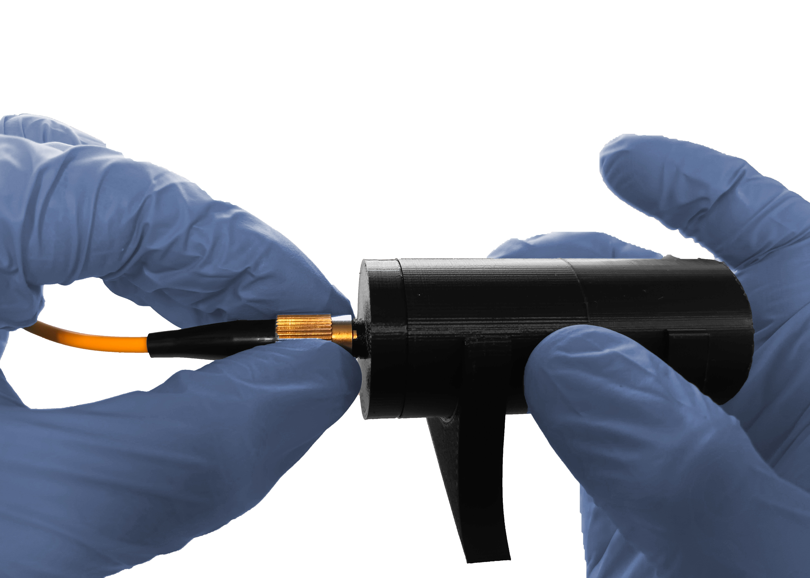
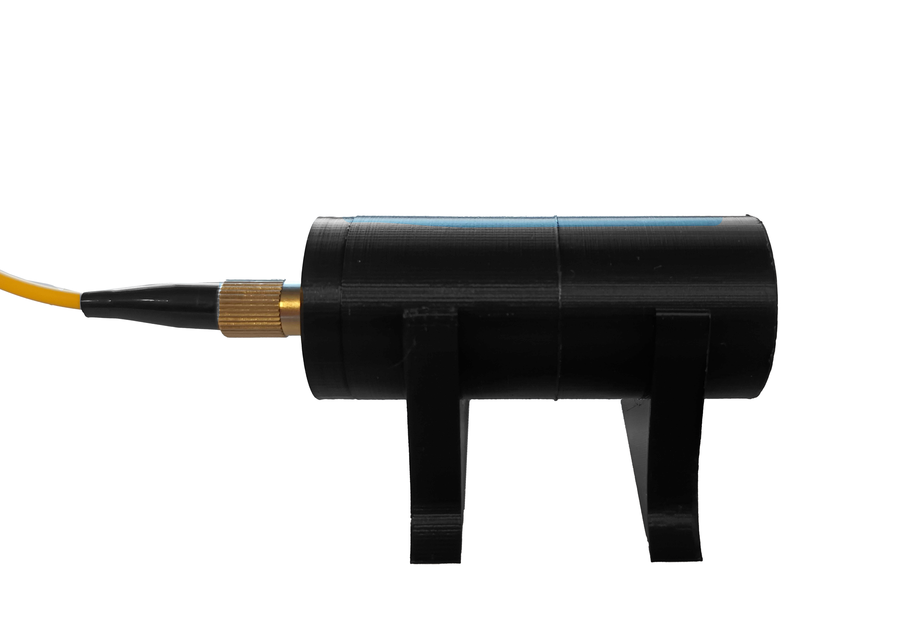

Optical Module
Warning Use nitrile gloves when handling all parts of the optical module. Take special care with the lenses and the laser fiber.
Step 1: Optical Lens
Shim inner ring into OP tool. Then, insert into optical tube and rotate to a minimum depth of 6mm to later insert lens and second internal ring.

 

Insert lens into optical tube.


Fit second inner ring on OP tool, insert into optical tube and turn until it stops.


Step 2: Optical tubes
For this step, you must have the optical tube with its attached lens, assembled in the previous step.
Fit both tubes and turn until the end.

Step 3: Base
For this step, you must have the extended optical tube, assembled in the previous step.
Place clamps on a horizontal surface at a distance of 25 mm between both parts. Then, assemble optical tube to both clamps by pressing down.


Step 4: Fiber laser adapter
For this step, you must have the extended optical tube with the clamps, assembled in the previous step.
Fit laser fiber adapter and turn all the way.


Remove laser cap, assemble laser with [fiber laser adapter] and turn laser adapter all the way.
Warning Do not touch fiber optics. Manipulate components as shown in the images.
 



The assembly should look like the image below.

Step 5: Laser aiming surface
For optical safety protocol, it is recommended to use a flat, black surface to point the laser. Included in the kit are 2 fasteners and a piece of black cardboard for this purpose.

Step 6: Diffuser
To perform optical tests that require the use of diffuser, follow the following instructions:
- Stick a piece of adhesive tape on the diffuser so that the passage of light through it is interfered with.
- Fit diffuser into OP tool and insert the optical tube through the section closest to the laser fiber adapter.
Step 7: Adjustable Lens Tube
For activity that requires adjusting the position of the lens depending on its focal length, you could replace and use the adjustable lens tube part instead of one of the optical tubes.